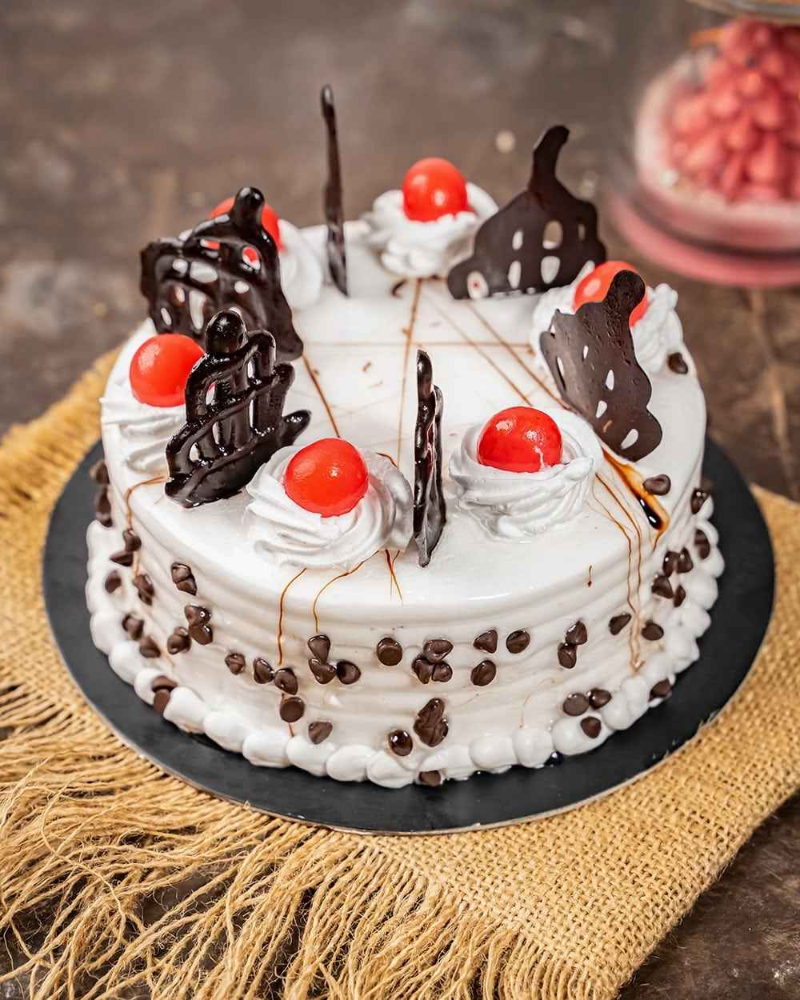

Recipe 1 - Vanilla Cake

Ingredients:
- 1 cup all-purpose flour (preferably unbleached and unbromated)
- 2 large eggs, at room temperature
- 1/2 cup granulated sugar
- 1/2 cup unsalted butter, softened
- 1 teaspoon pure vanilla extract
Instructions:
- Preheat the oven to 350°F (175°C). Make sure you have a rack in the middle of the oven.
- Mix together the flour, eggs, sugar, and melted butter in a large bowl. Add the vanilla extract and mix until well combined.
- Pour the batter into a greased and floured 9x13 inch baking tin. Tap the tin gently to remove any air bubbles.
- Bake for 25-30 minutes or until a toothpick inserted in the center comes out clean. The cake should be golden brown on top and firm to the touch.
- Remove the cake from the oven and let it cool in the tin for 5 minutes. Then, transfer it to a wire rack to cool completely.
- Once the cake is completely cool, you can frost it with your favorite frosting and decorate it as desired.
Prep Time:
30 minutes
Summary:
This recipe makes a delicious, moist, and flavorful cake. It is easy to make and requires minimal ingredients. The cake is perfect for any occasion, whether it's a birthday, anniversary, or just a sweet treat for yourself or your loved ones.